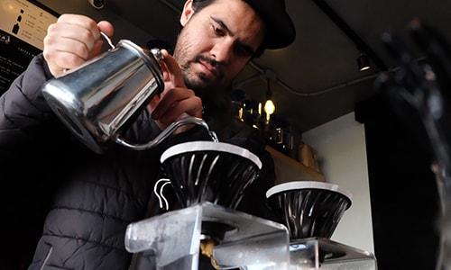

BLOG
ブログ

マイコーヒーブック
2019月2年8日、第3回目となる「マイコーヒーブック」を開催しました！ 今回は10名の参加された方に、お好きな豆を選んで自分だけのマイコーヒーを作って頂きました。 また、みなさんご自身お気に入りの本をご持参して頂き、今まで知らなかった本と出会える事も出来ました！

今日も元気にコケコッコー！
サンドイッチやパンケーキで使用しております卵は、お店の裏で飼育している鶏の卵を使用しております。 私の目覚まし時計は鶏達の鳴き声です笑

TVで紹介されました！
先日、テレビ番組「こんな喫茶店に行ってみたい」で当店を取り上げて頂きました！ 当店のバリスタ「ホンキー」も紹介して頂き、その強面からは想像出来ない程愉快だと反響を頂いております笑 皆様も是非会いに来て下さい！
テイクアウト始めました
以前までは店内販売のみでしたが、お客様の「外でも飲みたい！」と言う、有難いお声を頂き、テイクアウトを開始致しました。 また、コーヒー豆の販売も開始しましたので、ご家庭でも美味しい淹れたてコーヒーをお楽しみ頂けます。